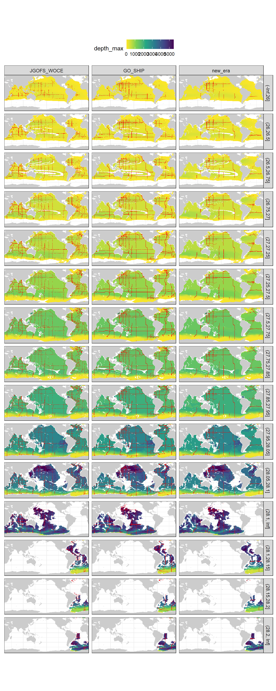
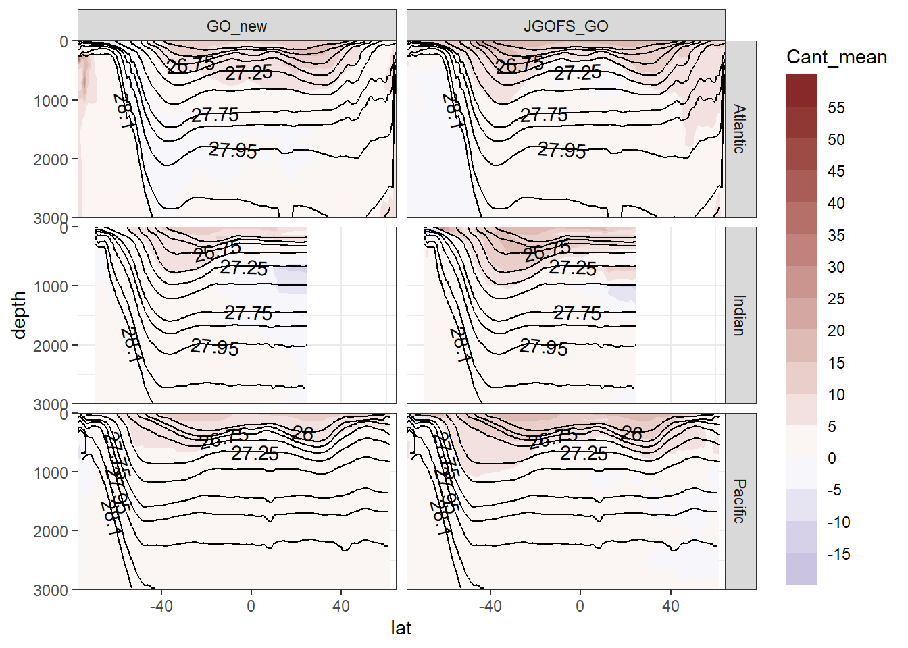
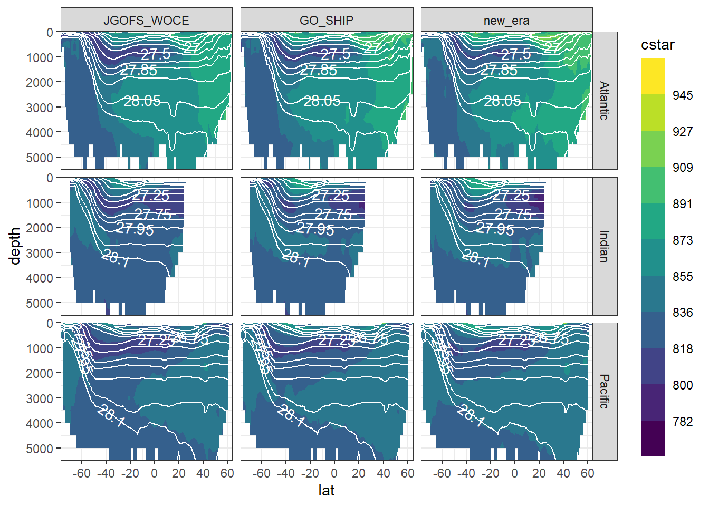

Analysis of Cant estimates
Jens Daniel Müller
08 September, 2020
Last updated: 2020-09-08
Checks: 7 0
Knit directory: Cant_eMLR/
This reproducible R Markdown analysis was created with workflowr (version 1.6.2). The Checks tab describes the reproducibility checks that were applied when the results were created. The Past versions tab lists the development history.
Great! Since the R Markdown file has been committed to the Git repository, you know the exact version of the code that produced these results.
Great job! The global environment was empty. Objects defined in the global environment can affect the analysis in your R Markdown file in unknown ways. For reproduciblity it’s best to always run the code in an empty environment.
The command set.seed(20200707) was run prior to running the code in the R Markdown file. Setting a seed ensures that any results that rely on randomness, e.g. subsampling or permutations, are reproducible.
Great job! Recording the operating system, R version, and package versions is critical for reproducibility.
Nice! There were no cached chunks for this analysis, so you can be confident that you successfully produced the results during this run.
Great job! Using relative paths to the files within your workflowr project makes it easier to run your code on other machines.
Great! You are using Git for version control. Tracking code development and connecting the code version to the results is critical for reproducibility.
The results in this page were generated with repository version 04ee730. See the Past versions tab to see a history of the changes made to the R Markdown and HTML files.
Note that you need to be careful to ensure that all relevant files for the analysis have been committed to Git prior to generating the results (you can use wflow_publish or wflow_git_commit). workflowr only checks the R Markdown file, but you know if there are other scripts or data files that it depends on. Below is the status of the Git repository when the results were generated:
Ignored files:
Ignored: .Rproj.user/
Ignored: data/GLODAPv1_1/
Ignored: data/GLODAPv2_2016b_MappedClimatologies/
Ignored: data/GLODAPv2_2020/
Ignored: data/Gruber_2019/
Ignored: data/WOCE/
Ignored: data/World_Ocean_Atlas_2013_Clement/
Ignored: data/World_Ocean_Atlas_2018/
Ignored: data/eMLR/
Ignored: data/mapping/
Ignored: data/pCO2_atmosphere/
Ignored: dump/
Untracked files:
Untracked: output/figure/eMLR/data_preparation/all_cruises_clean/GLODAP_cruise_date_1981-07-14_n_2127_cruise_237_.png
Untracked: output/figure/eMLR/data_preparation/all_cruises_clean/GLODAP_cruise_date_1983-01-10_n_1238_cruise_238_.png
Untracked: output/figure/eMLR/data_preparation/all_cruises_clean/GLODAP_cruise_date_1983-11-25_n_409_cruise_239_.png
Untracked: output/figure/eMLR/data_preparation/all_cruises_clean/GLODAP_cruise_date_1984-07-22_n_237_cruise_223_.png
Untracked: output/figure/eMLR/data_preparation/all_cruises_clean/GLODAP_cruise_date_1986-03-13_n_1437_cruise_370_.png
Untracked: output/figure/eMLR/data_preparation/all_cruises_clean/GLODAP_cruise_date_1986-08-13_n_388_cruise_2_.png
Untracked: output/figure/eMLR/data_preparation/all_cruises_clean/GLODAP_cruise_date_1988-09-10_n_3164_cruise_242_.png
Untracked: output/figure/eMLR/data_preparation/all_cruises_clean/GLODAP_cruise_date_1989-02-17_n_59_cruise_621_.png
Untracked: output/figure/eMLR/data_preparation/all_cruises_clean/GLODAP_cruise_date_1989-05-22_n_489_cruise_368_.png
Untracked: output/figure/eMLR/data_preparation/all_cruises_clean/GLODAP_cruise_date_1989-08-18_n_483_cruise_371_.png
Untracked: output/figure/eMLR/data_preparation/all_cruises_clean/GLODAP_cruise_date_1990-02-18_n_548_cruise_28_.png
Untracked: output/figure/eMLR/data_preparation/all_cruises_clean/GLODAP_cruise_date_1991-05-01_n_255_cruise_679_.png
Untracked: output/figure/eMLR/data_preparation/all_cruises_clean/GLODAP_cruise_date_1991-08-06_n_690_cruise_285_.png
Untracked: output/figure/eMLR/data_preparation/all_cruises_clean/GLODAP_cruise_date_1991-09-15_n_402_cruise_286_.png
Untracked: output/figure/eMLR/data_preparation/all_cruises_clean/GLODAP_cruise_date_1992-03-11_n_825_cruise_717_.png
Untracked: output/figure/eMLR/data_preparation/all_cruises_clean/GLODAP_cruise_date_1992-05-27_n_475_cruise_243_.png
Untracked: output/figure/eMLR/data_preparation/all_cruises_clean/GLODAP_cruise_date_1992-09-20_n_861_cruise_296_.png
Untracked: output/figure/eMLR/data_preparation/all_cruises_clean/GLODAP_cruise_date_1992-10-30_n_1108_cruise_245_.png
Untracked: output/figure/eMLR/data_preparation/all_cruises_clean/GLODAP_cruise_date_1992-12-30_n_755_cruise_246_.png
Untracked: output/figure/eMLR/data_preparation/all_cruises_clean/GLODAP_cruise_date_1993-03-15_n_1026_cruise_247_.png
Untracked: output/figure/eMLR/data_preparation/all_cruises_clean/GLODAP_cruise_date_1993-05-16_n_170_cruise_219_.png
Untracked: output/figure/eMLR/data_preparation/all_cruises_clean/GLODAP_cruise_date_1993-05-31_n_517_cruise_300_.png
Untracked: output/figure/eMLR/data_preparation/all_cruises_clean/GLODAP_cruise_date_1993-07-11_n_479_cruise_338_.png
Untracked: output/figure/eMLR/data_preparation/all_cruises_clean/GLODAP_cruise_date_1993-08-02_n_1466_cruise_301_.png
Untracked: output/figure/eMLR/data_preparation/all_cruises_clean/GLODAP_cruise_date_1993-09-06_n_189_cruise_712_.png
Untracked: output/figure/eMLR/data_preparation/all_cruises_clean/GLODAP_cruise_date_1993-10-25_n_687_cruise_302_.png
Untracked: output/figure/eMLR/data_preparation/all_cruises_clean/GLODAP_cruise_date_1994-01-27_n_858_cruise_459_.png
Untracked: output/figure/eMLR/data_preparation/all_cruises_clean/GLODAP_cruise_date_1994-02-06_n_621_cruise_303_.png
Untracked: output/figure/eMLR/data_preparation/all_cruises_clean/GLODAP_cruise_date_1994-02-15_n_2468_cruise_297_.png
Untracked: output/figure/eMLR/data_preparation/all_cruises_clean/GLODAP_cruise_date_1994-04-27_n_1097_cruise_248_.png
Untracked: output/figure/eMLR/data_preparation/all_cruises_clean/GLODAP_cruise_date_1994-05-06_n_235_cruise_428_.png
Untracked: output/figure/eMLR/data_preparation/all_cruises_clean/GLODAP_cruise_date_1994-05-07_n_2489_cruise_270_.png
Untracked: output/figure/eMLR/data_preparation/all_cruises_clean/GLODAP_cruise_date_1994-10-11_n_777_cruise_102_.png
Untracked: output/figure/eMLR/data_preparation/all_cruises_clean/GLODAP_cruise_date_1995-01-18_n_722_cruise_67_.png
Untracked: output/figure/eMLR/data_preparation/all_cruises_clean/GLODAP_cruise_date_1995-01-29_n_812_cruise_361_.png
Untracked: output/figure/eMLR/data_preparation/all_cruises_clean/GLODAP_cruise_date_1995-02-13_n_1808_cruise_250_.png
Untracked: output/figure/eMLR/data_preparation/all_cruises_clean/GLODAP_cruise_date_1995-03-12_n_218_cruise_362_.png
Untracked: output/figure/eMLR/data_preparation/all_cruises_clean/GLODAP_cruise_date_1995-03-29_n_1453_cruise_251_.png
Untracked: output/figure/eMLR/data_preparation/all_cruises_clean/GLODAP_cruise_date_1995-05-13_n_1432_cruise_252_.png
Untracked: output/figure/eMLR/data_preparation/all_cruises_clean/GLODAP_cruise_date_1995-06-26_n_1077_cruise_253_.png
Untracked: output/figure/eMLR/data_preparation/all_cruises_clean/GLODAP_cruise_date_1995-08-01_n_1572_cruise_254_.png
Untracked: output/figure/eMLR/data_preparation/all_cruises_clean/GLODAP_cruise_date_1995-09-02_n_421_cruise_431_.png
Untracked: output/figure/eMLR/data_preparation/all_cruises_clean/GLODAP_cruise_date_1995-10-10_n_1551_cruise_339_.png
Untracked: output/figure/eMLR/data_preparation/all_cruises_clean/GLODAP_cruise_date_1995-11-18_n_689_cruise_256_.png
Untracked: output/figure/eMLR/data_preparation/all_cruises_clean/GLODAP_cruise_date_1995-12-26_n_1346_cruise_257_.png
Untracked: output/figure/eMLR/data_preparation/all_cruises_clean/GLODAP_cruise_date_1996-02-11_n_2158_cruise_280_.png
Untracked: output/figure/eMLR/data_preparation/all_cruises_clean/GLODAP_cruise_date_1996-03-07_n_1129_cruise_374_.png
Untracked: output/figure/eMLR/data_preparation/all_cruises_clean/GLODAP_cruise_date_1996-05-01_n_518_cruise_334_.png
Untracked: output/figure/eMLR/data_preparation/all_cruises_clean/GLODAP_cruise_date_1996-06-07_n_1030_cruise_288_.png
Untracked: output/figure/eMLR/data_preparation/all_cruises_clean/GLODAP_cruise_date_1996-06-25_n_242_cruise_618_.png
Untracked: output/figure/eMLR/data_preparation/all_cruises_clean/GLODAP_cruise_date_1996-09-09_n_552_cruise_68_.png
Untracked: output/figure/eMLR/data_preparation/all_cruises_clean/GLODAP_cruise_date_1996-09-26_n_85_cruise_40_.png
Untracked: output/figure/eMLR/data_preparation/all_cruises_clean/GLODAP_cruise_date_1997-05-26_n_1040_cruise_160_.png
Untracked: output/figure/eMLR/data_preparation/all_cruises_clean/GLODAP_cruise_date_1997-05-27_n_309_cruise_42_.png
Untracked: output/figure/eMLR/data_preparation/all_cruises_clean/GLODAP_cruise_date_1997-06-14_n_1462_cruise_259_.png
Untracked: output/figure/eMLR/data_preparation/all_cruises_clean/GLODAP_cruise_date_1997-07-30_n_1132_cruise_260_.png
Untracked: output/figure/eMLR/data_preparation/all_cruises_clean/GLODAP_cruise_date_1997-08-25_n_798_cruise_261_.png
Untracked: output/figure/eMLR/data_preparation/all_cruises_clean/GLODAP_cruise_date_1997-11-22_n_211_cruise_464_.png
Untracked: output/figure/eMLR/data_preparation/all_cruises_clean/GLODAP_cruise_date_1997-12-20_n_514_cruise_434_.png
Untracked: output/figure/eMLR/data_preparation/all_cruises_clean/GLODAP_cruise_date_1998-02-11_n_1024_cruise_341_.png
Untracked: output/figure/eMLR/data_preparation/all_cruises_clean/GLODAP_cruise_date_1998-06-28_n_52_cruise_449_.png
Untracked: output/figure/eMLR/data_preparation/all_cruises_clean/GLODAP_cruise_date_1998-08-03_n_187_cruise_450_.png
Untracked: output/figure/eMLR/data_preparation/all_cruises_clean/GLODAP_cruise_date_1998-11-24_n_251_cruise_465_.png
Untracked: output/figure/eMLR/data_preparation/all_cruises_clean/GLODAP_cruise_date_1999-01-07_n_120_cruise_466_.png
Untracked: output/figure/eMLR/data_preparation/all_cruises_clean/GLODAP_cruise_date_1999-05-17_n_107_cruise_467_.png
Untracked: output/figure/eMLR/data_preparation/all_cruises_clean/GLODAP_cruise_date_1999-05-31_n_338_cruise_461_.png
Untracked: output/figure/eMLR/data_preparation/all_cruises_clean/GLODAP_cruise_date_1999-06-23_n_381_cruise_46_.png
Untracked: output/figure/eMLR/data_preparation/all_cruises_clean/GLODAP_cruise_date_1999-09-05_n_89_cruise_468_.png
Untracked: output/figure/eMLR/data_preparation/all_cruises_clean/GLODAP_cruise_date_2000-01-20_n_186_cruise_472_.png
Untracked: output/figure/eMLR/data_preparation/all_cruises_clean/GLODAP_cruise_date_2000-05-22_n_433_cruise_24_.png
Untracked: output/figure/eMLR/data_preparation/all_cruises_clean/GLODAP_cruise_date_2000-10-16_n_380_cruise_437_.png
Untracked: output/figure/eMLR/data_preparation/all_cruises_clean/GLODAP_cruise_date_2000-10-26_n_605_cruise_82_.png
Untracked: output/figure/eMLR/data_preparation/all_cruises_clean/GLODAP_cruise_date_2001-06-15_n_1143_cruise_83_.png
Untracked: output/figure/eMLR/data_preparation/all_cruises_clean/GLODAP_cruise_date_2001-06-23_n_381_cruise_476_.png
Untracked: output/figure/eMLR/data_preparation/all_cruises_clean/GLODAP_cruise_date_2001-08-14_n_870_cruise_477_.png
Untracked: output/figure/eMLR/data_preparation/all_cruises_clean/GLODAP_cruise_date_2001-09-04_n_32_cruise_478_.png
Untracked: output/figure/eMLR/data_preparation/all_cruises_clean/GLODAP_cruise_date_2001-09-12_n_392_cruise_438_.png
Untracked: output/figure/eMLR/data_preparation/all_cruises_clean/GLODAP_cruise_date_2001-11-17_n_912_cruise_70_.png
Untracked: output/figure/eMLR/data_preparation/all_cruises_clean/GLODAP_cruise_date_2002-06-27_n_147_cruise_263_.png
Untracked: output/figure/eMLR/data_preparation/all_cruises_clean/GLODAP_cruise_date_2002-06-28_n_769_cruise_392_.png
Untracked: output/figure/eMLR/data_preparation/all_cruises_clean/GLODAP_cruise_date_2003-03-13_n_768_cruise_484_.png
Untracked: output/figure/eMLR/data_preparation/all_cruises_clean/GLODAP_cruise_date_2003-07-03_n_14_cruise_591_.png
Untracked: output/figure/eMLR/data_preparation/all_cruises_clean/GLODAP_cruise_date_2003-07-23_n_20_cruise_592_.png
Untracked: output/figure/eMLR/data_preparation/all_cruises_clean/GLODAP_cruise_date_2003-08-10_n_1153_cruise_56_.png
Untracked: output/figure/eMLR/data_preparation/all_cruises_clean/GLODAP_cruise_date_2003-09-07_n_2722_cruise_486_.png
Untracked: output/figure/eMLR/data_preparation/all_cruises_clean/GLODAP_cruise_date_2003-10-06_n_1055_cruise_264_.png
Untracked: output/figure/eMLR/data_preparation/all_cruises_clean/GLODAP_cruise_date_2003-11-03_n_976_cruise_265_.png
Untracked: output/figure/eMLR/data_preparation/all_cruises_clean/GLODAP_cruise_date_2003-11-19_n_1221_cruise_487_.png
Untracked: output/figure/eMLR/data_preparation/all_cruises_clean/GLODAP_cruise_date_2004-01-01_n_1682_cruise_488_.png
Untracked: output/figure/eMLR/data_preparation/all_cruises_clean/GLODAP_cruise_date_2004-01-23_n_13_cruise_593_.png
Untracked: output/figure/eMLR/data_preparation/all_cruises_clean/GLODAP_cruise_date_2004-04-22_n_913_cruise_695_.png
Untracked: output/figure/eMLR/data_preparation/all_cruises_clean/GLODAP_cruise_date_2004-04-29_n_59_cruise_556_.png
Untracked: output/figure/eMLR/data_preparation/all_cruises_clean/GLODAP_cruise_date_2004-05-22_n_202_cruise_167_.png
Untracked: output/figure/eMLR/data_preparation/all_cruises_clean/GLODAP_cruise_date_2004-05-26_n_10_cruise_463_.png
Untracked: output/figure/eMLR/data_preparation/all_cruises_clean/GLODAP_cruise_date_2004-06-20_n_14_cruise_594_.png
Untracked: output/figure/eMLR/data_preparation/all_cruises_clean/GLODAP_cruise_date_2004-06-22_n_806_cruise_393_.png
Untracked: output/figure/eMLR/data_preparation/all_cruises_clean/GLODAP_cruise_date_2004-07-12_n_63_cruise_595_.png
Untracked: output/figure/eMLR/data_preparation/all_cruises_clean/GLODAP_cruise_date_2004-07-20_n_3228_cruise_272_.png
Untracked: output/figure/eMLR/data_preparation/all_cruises_clean/GLODAP_cruise_date_2004-08-17_n_956_cruise_490_.png
Untracked: output/figure/eMLR/data_preparation/all_cruises_clean/GLODAP_cruise_date_2004-10-23_n_83_cruise_492_.png
Untracked: output/figure/eMLR/data_preparation/all_cruises_clean/GLODAP_cruise_date_2004-10-27_n_59_cruise_596_.png
Untracked: output/figure/eMLR/data_preparation/all_cruises_clean/GLODAP_cruise_date_2005-01-10_n_691_cruise_72_.png
Untracked: output/figure/eMLR/data_preparation/all_cruises_clean/GLODAP_cruise_date_2005-01-24_n_14_cruise_597_.png
Untracked: output/figure/eMLR/data_preparation/all_cruises_clean/GLODAP_cruise_date_2005-01-25_n_2240_cruise_350_.png
Untracked: output/figure/eMLR/data_preparation/all_cruises_clean/GLODAP_cruise_date_2005-01-25_n_59_cruise_558_.png
Untracked: output/figure/eMLR/data_preparation/all_cruises_clean/GLODAP_cruise_date_2005-03-08_n_67_cruise_494_.png
Untracked: output/figure/eMLR/data_preparation/all_cruises_clean/GLODAP_cruise_date_2005-04-28_n_60_cruise_559_.png
Untracked: output/figure/eMLR/data_preparation/all_cruises_clean/GLODAP_cruise_date_2005-05-25_n_890_cruise_683_.png
Untracked: output/figure/eMLR/data_preparation/all_cruises_clean/GLODAP_cruise_date_2005-05-30_n_242_cruise_168_.png
Untracked: output/figure/eMLR/data_preparation/all_cruises_clean/GLODAP_cruise_date_2005-06-11_n_1558_cruise_495_.png
Untracked: output/figure/eMLR/data_preparation/all_cruises_clean/GLODAP_cruise_date_2005-07-17_n_66_cruise_599_.png
Untracked: output/figure/eMLR/data_preparation/all_cruises_clean/GLODAP_cruise_date_2005-09-14_n_1837_cruise_266_.png
Untracked: output/figure/eMLR/data_preparation/all_cruises_clean/GLODAP_cruise_date_2005-09-30_n_178_cruise_496_.png
Untracked: output/figure/eMLR/data_preparation/all_cruises_clean/GLODAP_cruise_date_2005-10-25_n_69_cruise_600_.png
Untracked: output/figure/eMLR/data_preparation/all_cruises_clean/GLODAP_cruise_date_2005-12-08_n_2641_cruise_497_.png
Untracked: output/figure/eMLR/data_preparation/all_cruises_clean/GLODAP_cruise_date_2006-01-24_n_68_cruise_561_.png
Untracked: output/figure/eMLR/data_preparation/all_cruises_clean/GLODAP_cruise_date_2006-03-08_n_1719_cruise_306_.png
Untracked: output/figure/eMLR/data_preparation/all_cruises_clean/GLODAP_cruise_date_2006-04-25_n_38_cruise_562_.png
Untracked: output/figure/eMLR/data_preparation/all_cruises_clean/GLODAP_cruise_date_2006-06-04_n_587_cruise_25_.png
Untracked: output/figure/eMLR/data_preparation/all_cruises_clean/GLODAP_cruise_date_2006-06-21_n_968_cruise_498_.png
Untracked: output/figure/eMLR/data_preparation/all_cruises_clean/GLODAP_cruise_date_2006-07-11_n_37_cruise_603_.png
Untracked: output/figure/eMLR/data_preparation/all_cruises_clean/GLODAP_cruise_date_2006-10-26_n_68_cruise_604_.png
Untracked: output/figure/eMLR/data_preparation/all_cruises_clean/GLODAP_cruise_date_2007-01-23_n_85_cruise_564_.png
Untracked: output/figure/eMLR/data_preparation/all_cruises_clean/GLODAP_cruise_date_2007-02-28_n_1671_cruise_352_.png
Untracked: output/figure/eMLR/data_preparation/all_cruises_clean/GLODAP_cruise_date_2007-03-09_n_1058_cruise_501_.png
Untracked: output/figure/eMLR/data_preparation/all_cruises_clean/GLODAP_cruise_date_2007-04-11_n_1995_cruise_353_.png
Untracked: output/figure/eMLR/data_preparation/all_cruises_clean/GLODAP_cruise_date_2007-04-30_n_63_cruise_565_.png
Untracked: output/figure/eMLR/data_preparation/all_cruises_clean/GLODAP_cruise_date_2007-07-03_n_47_cruise_606_.png
Untracked: output/figure/eMLR/data_preparation/all_cruises_clean/GLODAP_cruise_date_2007-07-31_n_33_cruise_607_.png
Untracked: output/figure/eMLR/data_preparation/all_cruises_clean/GLODAP_cruise_date_2007-08-14_n_1209_cruise_502_.png
Untracked: output/figure/eMLR/data_preparation/all_cruises_clean/GLODAP_cruise_date_2007-09-16_n_478_cruise_667_.png
Untracked: output/figure/eMLR/data_preparation/all_cruises_clean/GLODAP_cruise_date_2007-10-30_n_1828_cruise_504_.png
Untracked: output/figure/eMLR/data_preparation/all_cruises_clean/GLODAP_cruise_date_2007-10-31_n_63_cruise_566_.png
Untracked: output/figure/eMLR/data_preparation/all_cruises_clean/GLODAP_cruise_date_2007-12-07_n_1654_cruise_505_.png
Untracked: output/figure/eMLR/data_preparation/all_cruises_clean/GLODAP_cruise_date_2008-01-08_n_551_cruise_74_.png
Untracked: output/figure/eMLR/data_preparation/all_cruises_clean/GLODAP_cruise_date_2008-01-16_n_3261_cruise_345_.png
Untracked: output/figure/eMLR/data_preparation/all_cruises_clean/GLODAP_cruise_date_2008-02-01_n_79_cruise_608_.png
Untracked: output/figure/eMLR/data_preparation/all_cruises_clean/GLODAP_cruise_date_2008-02-21_n_1640_cruise_354_.png
Untracked: output/figure/eMLR/data_preparation/all_cruises_clean/GLODAP_cruise_date_2008-03-02_n_996_cruise_385_.png
Untracked: output/figure/eMLR/data_preparation/all_cruises_clean/GLODAP_cruise_date_2008-03-15_n_927_cruise_19_.png
Untracked: output/figure/eMLR/data_preparation/all_cruises_clean/GLODAP_cruise_date_2008-04-06_n_841_cruise_75_.png
Untracked: output/figure/eMLR/data_preparation/all_cruises_clean/GLODAP_cruise_date_2008-04-28_n_57_cruise_568_.png
Untracked: output/figure/eMLR/data_preparation/all_cruises_clean/GLODAP_cruise_date_2008-05-28_n_416_cruise_171_.png
Untracked: output/figure/eMLR/data_preparation/all_cruises_clean/GLODAP_cruise_date_2008-06-22_n_868_cruise_394_.png
Untracked: output/figure/eMLR/data_preparation/all_cruises_clean/GLODAP_cruise_date_2008-10-21_n_363_cruise_506_.png
Untracked: output/figure/eMLR/data_preparation/all_cruises_clean/GLODAP_cruise_date_2009-01-07_n_345_cruise_674_.png
Untracked: output/figure/eMLR/data_preparation/all_cruises_clean/GLODAP_cruise_date_2009-02-16_n_672_cruise_675_.png
Untracked: output/figure/eMLR/data_preparation/all_cruises_clean/GLODAP_cruise_date_2009-02-27_n_1170_cruise_84_.png
Untracked: output/figure/eMLR/data_preparation/all_cruises_clean/GLODAP_cruise_date_2009-03-29_n_1063_cruise_676_.png
Untracked: output/figure/eMLR/data_preparation/all_cruises_clean/GLODAP_cruise_date_2009-04-17_n_3605_cruise_355_.png
Untracked: output/figure/eMLR/data_preparation/all_cruises_clean/GLODAP_cruise_date_2009-05-18_n_2663_cruise_507_.png
Untracked: output/figure/eMLR/data_preparation/all_cruises_clean/GLODAP_cruise_date_2009-05-23_n_317_cruise_172_.png
Untracked: output/figure/eMLR/data_preparation/all_cruises_clean/GLODAP_cruise_date_2009-07-12_n_145_cruise_635_.png
Untracked: output/figure/eMLR/data_preparation/all_cruises_clean/GLODAP_cruise_date_2009-08-02_n_127_cruise_26_.png
Untracked: output/figure/eMLR/data_preparation/all_cruises_clean/GLODAP_cruise_date_2009-11-10_n_319_cruise_63_.png
Untracked: output/figure/eMLR/data_preparation/all_cruises_clean/GLODAP_cruise_date_2009-11-18_n_158_cruise_1059_.png
Untracked: output/figure/eMLR/data_preparation/all_cruises_clean/GLODAP_cruise_date_2010-01-01_n_4235_cruise_273_.png
Untracked: output/figure/eMLR/data_preparation/all_cruises_clean/GLODAP_cruise_date_2010-01-25_n_932_cruise_699_.png
Untracked: output/figure/eMLR/data_preparation/all_cruises_clean/GLODAP_cruise_date_2010-03-30_n_2340_cruise_346_.png
Untracked: output/figure/eMLR/data_preparation/all_cruises_clean/GLODAP_cruise_date_2010-04-03_n_377_cruise_703_.png
Untracked: output/figure/eMLR/data_preparation/all_cruises_clean/GLODAP_cruise_date_2010-05-21_n_266_cruise_173_.png
Untracked: output/figure/eMLR/data_preparation/all_cruises_clean/GLODAP_cruise_date_2010-05-26_n_168_cruise_1085_.png
Untracked: output/figure/eMLR/data_preparation/all_cruises_clean/GLODAP_cruise_date_2010-06-19_n_842_cruise_395_.png
Untracked: output/figure/eMLR/data_preparation/all_cruises_clean/GLODAP_cruise_date_2010-07-25_n_1356_cruise_609_.png
Untracked: output/figure/eMLR/data_preparation/all_cruises_clean/GLODAP_cruise_date_2010-08-19_n_88_cruise_1064_.png
Untracked: output/figure/eMLR/data_preparation/all_cruises_clean/GLODAP_cruise_date_2010-10-16_n_161_cruise_2028_.png
Untracked: output/figure/eMLR/data_preparation/all_cruises_clean/GLODAP_cruise_date_2010-11-15_n_87_cruise_2029_.png
Untracked: output/figure/eMLR/data_preparation/all_cruises_clean/GLODAP_cruise_date_2010-12-22_n_1297_cruise_20_.png
Untracked: output/figure/eMLR/data_preparation/all_cruises_clean/GLODAP_cruise_date_2011-01-17_n_108_cruise_1065_.png
Untracked: output/figure/eMLR/data_preparation/all_cruises_clean/GLODAP_cruise_date_2011-01-30_n_270_cruise_1087_.png
Untracked: output/figure/eMLR/data_preparation/all_cruises_clean/GLODAP_cruise_date_2011-02-18_n_121_cruise_1066_.png
Untracked: output/figure/eMLR/data_preparation/all_cruises_clean/GLODAP_cruise_date_2011-03-21_n_2140_cruise_295_.png
Untracked: output/figure/eMLR/data_preparation/all_cruises_clean/GLODAP_cruise_date_2011-05-18_n_516_cruise_174_.png
Untracked: output/figure/eMLR/data_preparation/all_cruises_clean/GLODAP_cruise_date_2011-06-25_n_250_cruise_1067_.png
Untracked: output/figure/eMLR/data_preparation/all_cruises_clean/GLODAP_cruise_date_2011-07-07_n_2466_cruise_517_.png
Untracked: output/figure/eMLR/data_preparation/all_cruises_clean/GLODAP_cruise_date_2011-10-08_n_887_cruise_347_.png
Untracked: output/figure/eMLR/data_preparation/all_cruises_clean/GLODAP_cruise_date_2011-10-26_n_214_cruise_2031_.png
Untracked: output/figure/eMLR/data_preparation/all_cruises_clean/GLODAP_cruise_date_2012-01-28_n_253_cruise_1090_.png
Untracked: output/figure/eMLR/data_preparation/all_cruises_clean/GLODAP_cruise_date_2012-02-06_n_591_cruise_1002_.png
Untracked: output/figure/eMLR/data_preparation/all_cruises_clean/GLODAP_cruise_date_2012-02-19_n_242_cruise_1069_.png
Untracked: output/figure/eMLR/data_preparation/all_cruises_clean/GLODAP_cruise_date_2012-04-03_n_1103_cruise_329_.png
Untracked: output/figure/eMLR/data_preparation/all_cruises_clean/GLODAP_cruise_date_2012-04-15_n_111_cruise_2033_.png
Untracked: output/figure/eMLR/data_preparation/all_cruises_clean/GLODAP_cruise_date_2012-05-01_n_1390_cruise_330_.png
Untracked: output/figure/eMLR/data_preparation/all_cruises_clean/GLODAP_cruise_date_2012-06-07_n_152_cruise_1029_.png
Untracked: output/figure/eMLR/data_preparation/all_cruises_clean/GLODAP_cruise_date_2012-06-26_n_388_cruise_1092_.png
Untracked: output/figure/eMLR/data_preparation/all_cruises_clean/GLODAP_cruise_date_2012-07-05_n_715_cruise_1031_.png
Untracked: output/figure/eMLR/data_preparation/all_cruises_clean/GLODAP_cruise_date_2012-07-20_n_793_cruise_1071_.png
Untracked: output/figure/eMLR/data_preparation/all_cruises_clean/GLODAP_cruise_date_2012-08-14_n_1250_cruise_518_.png
Untracked: output/figure/eMLR/data_preparation/all_cruises_clean/GLODAP_cruise_date_2012-11-10_n_191_cruise_1073_.png
Untracked: output/figure/eMLR/data_preparation/all_cruises_clean/GLODAP_cruise_date_2012-12-05_n_231_cruise_2071_.png
Untracked: output/figure/eMLR/data_preparation/all_cruises_clean/GLODAP_cruise_date_2012-12-12_n_118_cruise_1074_.png
Untracked: output/figure/eMLR/data_preparation/all_cruises_clean/GLODAP_cruise_date_2012-12-15_n_828_cruise_1050_.png
Untracked: output/figure/eMLR/data_preparation/all_cruises_clean/GLODAP_cruise_date_2013-01-23_n_896_cruise_1051_.png
Untracked: output/figure/eMLR/data_preparation/all_cruises_clean/GLODAP_cruise_date_2013-01-29_n_369_cruise_1093_.png
Untracked: output/figure/eMLR/data_preparation/all_cruises_clean/GLODAP_cruise_date_2013-02-19_n_221_cruise_1076_.png
Untracked: output/figure/eMLR/data_preparation/all_cruises_clean/GLODAP_cruise_date_2013-03-14_n_222_cruise_2072_.png
Untracked: output/figure/eMLR/data_preparation/all_cruises_clean/GLODAP_cruise_date_2013-05-02_n_2816_cruise_1035_.png
Untracked: output/figure/eMLR/data_preparation/all_cruises_clean/GLODAP_cruise_date_2013-05-06_n_298_cruise_2073_.png
Untracked: output/figure/eMLR/data_preparation/all_cruises_clean/GLODAP_cruise_date_2013-06-09_n_233_cruise_1078_.png
Untracked: output/figure/eMLR/data_preparation/all_cruises_clean/GLODAP_cruise_date_2013-07-24_n_678_cruise_1079_.png
Untracked: output/figure/eMLR/data_preparation/all_cruises_clean/GLODAP_cruise_date_2013-08-21_n_883_cruise_1096_.png
Untracked: output/figure/eMLR/data_preparation/all_cruises_clean/GLODAP_cruise_date_2013-09-02_n_2030_cruise_1041_.png
Untracked: output/figure/eMLR/data_preparation/all_cruises_clean/GLODAP_cruise_date_2013-11-09_n_129_cruise_2036_.png
Untracked: output/figure/eMLR/data_preparation/all_cruises_clean/GLODAP_cruise_date_2013-12-06_n_137_cruise_2074_.png
Untracked: output/figure/eMLR/data_preparation/all_cruises_clean/GLODAP_cruise_date_2014-01-11_n_1766_cruise_1042_.png
Untracked: output/figure/eMLR/data_preparation/all_cruises_clean/GLODAP_cruise_date_2014-01-24_n_288_cruise_2075_.png
Untracked: output/figure/eMLR/data_preparation/all_cruises_clean/GLODAP_cruise_date_2014-02-22_n_253_cruise_2038_.png
Untracked: output/figure/eMLR/data_preparation/all_cruises_clean/GLODAP_cruise_date_2014-03-13_n_187_cruise_2076_.png
Untracked: output/figure/eMLR/data_preparation/all_cruises_clean/GLODAP_cruise_date_2014-04-18_n_2219_cruise_1036_.png
Untracked: output/figure/eMLR/data_preparation/all_cruises_clean/GLODAP_cruise_date_2014-04-29_n_78_cruise_2039_.png
Untracked: output/figure/eMLR/data_preparation/all_cruises_clean/GLODAP_cruise_date_2014-05-05_n_288_cruise_2077_.png
Untracked: output/figure/eMLR/data_preparation/all_cruises_clean/GLODAP_cruise_date_2014-05-18_n_272_cruise_2040_.png
Untracked: output/figure/eMLR/data_preparation/all_cruises_clean/GLODAP_cruise_date_2014-06-16_n_195_cruise_2078_.png
Untracked: output/figure/eMLR/data_preparation/all_cruises_clean/GLODAP_cruise_date_2014-07-08_n_374_cruise_1098_.png
Untracked: output/figure/eMLR/data_preparation/all_cruises_clean/GLODAP_cruise_date_2014-07-25_n_403_cruise_2041_.png
Untracked: output/figure/eMLR/data_preparation/all_cruises_clean/GLODAP_cruise_date_2014-08-03_n_1705_cruise_1053_.png
Untracked: output/figure/eMLR/data_preparation/all_cruises_clean/GLODAP_cruise_date_2014-08-10_n_726_cruise_1099_.png
Untracked: output/figure/eMLR/data_preparation/all_cruises_clean/GLODAP_cruise_date_2014-09-30_n_131_cruise_2042_.png
Untracked: output/figure/eMLR/data_preparation/all_cruises_clean/GLODAP_cruise_date_2014-12-11_n_536_cruise_1004_.png
Untracked: output/figure/eMLR/data_preparation/all_cruises_clean/GLODAP_cruise_date_2015-01-29_n_315_cruise_2080_.png
Untracked: output/figure/eMLR/data_preparation/all_cruises_clean/GLODAP_cruise_date_2015-02-14_n_234_cruise_2044_.png
Untracked: output/figure/eMLR/data_preparation/all_cruises_clean/GLODAP_cruise_date_2015-03-04_n_215_cruise_2081_.png
Untracked: output/figure/eMLR/data_preparation/all_cruises_clean/GLODAP_cruise_date_2015-04-20_n_260_cruise_1103_.png
Untracked: output/figure/eMLR/data_preparation/all_cruises_clean/GLODAP_cruise_date_2015-05-02_n_230_cruise_2083_.png
Untracked: output/figure/eMLR/data_preparation/all_cruises_clean/GLODAP_cruise_date_2015-05-04_n_874_cruise_1043_.png
Untracked: output/figure/eMLR/data_preparation/all_cruises_clean/GLODAP_cruise_date_2015-05-12_n_362_cruise_1027_.png
Untracked: output/figure/eMLR/data_preparation/all_cruises_clean/GLODAP_cruise_date_2015-05-17_n_141_cruise_2046_.png
Untracked: output/figure/eMLR/data_preparation/all_cruises_clean/GLODAP_cruise_date_2015-05-17_n_689_cruise_1011_.png
Untracked: output/figure/eMLR/data_preparation/all_cruises_clean/GLODAP_cruise_date_2015-06-09_n_1587_cruise_1044_.png
Untracked: output/figure/eMLR/data_preparation/all_cruises_clean/GLODAP_cruise_date_2015-07-20_n_445_cruise_2047_.png
Untracked: output/figure/eMLR/data_preparation/all_cruises_clean/GLODAP_cruise_date_2015-08-16_n_817_cruise_1100_.png
Untracked: output/figure/eMLR/data_preparation/all_cruises_clean/GLODAP_cruise_date_2015-11-05_n_135_cruise_2048_.png
Untracked: output/figure/eMLR/data_preparation/all_cruises_clean/GLODAP_cruise_date_2015-11-20_n_106_cruise_2086_.png
Untracked: output/figure/eMLR/data_preparation/all_cruises_clean/GLODAP_cruise_date_2016-01-03_n_661_cruise_1054_.png
Untracked: output/figure/eMLR/data_preparation/all_cruises_clean/GLODAP_cruise_date_2016-01-16_n_78_cruise_2049_.png
Untracked: output/figure/eMLR/data_preparation/all_cruises_clean/GLODAP_cruise_date_2016-01-25_n_287_cruise_2087_.png
Untracked: output/figure/eMLR/data_preparation/all_cruises_clean/GLODAP_cruise_date_2016-02-15_n_381_cruise_2050_.png
Untracked: output/figure/eMLR/data_preparation/all_cruises_clean/GLODAP_cruise_date_2016-03-01_n_1352_cruise_1046_.png
Untracked: output/figure/eMLR/data_preparation/all_cruises_clean/GLODAP_cruise_date_2016-03-04_n_230_cruise_2088_.png
Untracked: output/figure/eMLR/data_preparation/all_cruises_clean/GLODAP_cruise_date_2016-05-04_n_307_cruise_2090_.png
Untracked: output/figure/eMLR/data_preparation/all_cruises_clean/GLODAP_cruise_date_2016-05-16_n_146_cruise_2052_.png
Untracked: output/figure/eMLR/data_preparation/all_cruises_clean/GLODAP_cruise_date_2016-05-31_n_2080_cruise_1020_.png
Untracked: output/figure/eMLR/data_preparation/all_cruises_clean/GLODAP_cruise_date_2016-06-16_n_263_cruise_2091_.png
Untracked: output/figure/eMLR/data_preparation/all_cruises_clean/GLODAP_cruise_date_2016-06-24_n_104_cruise_2053_.png
Untracked: output/figure/eMLR/data_preparation/all_cruises_clean/GLODAP_cruise_date_2016-07-04_n_833_cruise_2011_.png
Untracked: output/figure/eMLR/data_preparation/all_cruises_clean/GLODAP_cruise_date_2016-07-21_n_1102_cruise_1101_.png
Untracked: output/figure/eMLR/data_preparation/all_cruises_clean/GLODAP_cruise_date_2016-08-13_n_290_cruise_2054_.png
Untracked: output/figure/eMLR/data_preparation/all_cruises_clean/GLODAP_cruise_date_2016-09-25_n_160_cruise_2055_.png
Untracked: output/figure/eMLR/data_preparation/all_cruises_clean/GLODAP_cruise_date_2016-11-01_n_132_cruise_2092_.png
Untracked: output/figure/eMLR/data_preparation/all_cruises_clean/GLODAP_cruise_date_2016-11-20_n_103_cruise_2056_.png
Untracked: output/figure/eMLR/data_preparation/all_cruises_clean/GLODAP_cruise_date_2016-12-25_n_3975_cruise_1045_.png
Untracked: output/figure/eMLR/data_preparation/all_cruises_clean/GLODAP_cruise_date_2017-01-12_n_103_cruise_2093_.png
Untracked: output/figure/eMLR/data_preparation/all_cruises_clean/GLODAP_cruise_date_2017-01-30_n_368_cruise_2057_.png
Untracked: output/figure/eMLR/data_preparation/all_cruises_clean/GLODAP_cruise_date_2017-02-16_n_269_cruise_2094_.png
Untracked: output/figure/eMLR/data_preparation/all_cruises_clean/GLODAP_cruise_date_2017-02-19_n_428_cruise_1055_.png
Untracked: output/figure/eMLR/data_preparation/all_cruises_clean/GLODAP_cruise_date_2017-03-06_n_277_cruise_2058_.png
Untracked: output/figure/eMLR/data_preparation/all_cruises_clean/GLODAP_cruise_date_2017-04-16_n_274_cruise_2059_.png
Untracked: output/figure/eMLR/data_preparation/all_cruises_clean/GLODAP_cruise_date_2017-05-11_n_696_cruise_2027_.png
Untracked: output/figure/eMLR/data_preparation/all_cruises_clean/GLODAP_cruise_date_2017-06-20_n_134_cruise_2061_.png
Untracked: output/figure/eMLR/data_preparation/all_cruises_clean/GLODAP_cruise_date_2017-07-09_n_1120_cruise_2096_.png
Untracked: output/figure/eMLR/data_preparation/all_cruises_clean/GLODAP_cruise_date_2017-08-13_n_224_cruise_2062_.png
Untracked: output/figure/eMLR/data_preparation/all_cruises_clean/GLODAP_cruise_date_2017-09-13_n_175_cruise_2097_.png
Untracked: output/figure/eMLR/data_preparation/all_cruises_clean/GLODAP_cruise_date_2017-12-04_n_247_cruise_2098_.png
Untracked: output/figure/eMLR/data_preparation/all_cruises_clean/GLODAP_cruise_date_2018-01-24_n_308_cruise_2099_.png
Untracked: output/figure/eMLR/data_preparation/all_cruises_clean/GLODAP_cruise_date_2018-01-29_n_1274_cruise_2008_.png
Untracked: output/figure/eMLR/data_preparation/all_cruises_clean/GLODAP_cruise_date_2018-02-12_n_275_cruise_2064_.png
Untracked: output/figure/eMLR/data_preparation/all_cruises_clean/GLODAP_cruise_date_2018-03-07_n_249_cruise_2100_.png
Untracked: output/figure/eMLR/data_preparation/all_cruises_clean/GLODAP_cruise_date_2018-03-18_n_1814_cruise_2105_.png
Untracked: output/figure/eMLR/data_preparation/all_cruises_clean/GLODAP_cruise_date_2018-04-16_n_328_cruise_2065_.png
Untracked: output/figure/eMLR/data_preparation/all_cruises_clean/GLODAP_cruise_date_2018-06-22_n_510_cruise_2102_.png
Untracked: output/figure/eMLR/data_preparation/all_cruises_clean/GLODAP_cruise_date_2018-10-09_n_158_cruise_2068_.png
Untracked: output/figure/eMLR/data_preparation/all_cruises_clean/GLODAP_cruise_date_2019-04-27_n_808_cruise_2013_.png
Unstaged changes:
Modified: analysis/_site.yml
Modified: code/Workflowr_project_managment.R
Modified: code/plotting_functions.R
Deleted: output/figure/eMLR/data_preparation/all_cruises_clean/GLODAP_cruise_date_1981-07-14_n_2108_cruise_237_.png
Deleted: output/figure/eMLR/data_preparation/all_cruises_clean/GLODAP_cruise_date_1983-01-10_n_1235_cruise_238_.png
Deleted: output/figure/eMLR/data_preparation/all_cruises_clean/GLODAP_cruise_date_1983-11-25_n_407_cruise_239_.png
Deleted: output/figure/eMLR/data_preparation/all_cruises_clean/GLODAP_cruise_date_1986-03-12_n_1415_cruise_370_.png
Deleted: output/figure/eMLR/data_preparation/all_cruises_clean/GLODAP_cruise_date_1988-09-10_n_3163_cruise_242_.png
Deleted: output/figure/eMLR/data_preparation/all_cruises_clean/GLODAP_cruise_date_1989-02-16_n_58_cruise_621_.png
Modified: output/figure/eMLR/data_preparation/all_cruises_clean/GLODAP_cruise_date_1989-05-08_n_96_cruise_275_.png
Deleted: output/figure/eMLR/data_preparation/all_cruises_clean/GLODAP_cruise_date_1989-08-18_n_475_cruise_371_.png
Modified: output/figure/eMLR/data_preparation/all_cruises_clean/GLODAP_cruise_date_1991-06-22_n_211_cruise_284_.png
Deleted: output/figure/eMLR/data_preparation/all_cruises_clean/GLODAP_cruise_date_1991-09-15_n_398_cruise_286_.png
Deleted: output/figure/eMLR/data_preparation/all_cruises_clean/GLODAP_cruise_date_1992-09-20_n_845_cruise_296_.png
Deleted: output/figure/eMLR/data_preparation/all_cruises_clean/GLODAP_cruise_date_1993-05-31_n_516_cruise_300_.png
Deleted: output/figure/eMLR/data_preparation/all_cruises_clean/GLODAP_cruise_date_1993-07-11_n_377_cruise_338_.png
Deleted: output/figure/eMLR/data_preparation/all_cruises_clean/GLODAP_cruise_date_1993-08-02_n_1416_cruise_301_.png
Deleted: output/figure/eMLR/data_preparation/all_cruises_clean/GLODAP_cruise_date_1993-09-06_n_187_cruise_712_.png
Deleted: output/figure/eMLR/data_preparation/all_cruises_clean/GLODAP_cruise_date_1993-10-25_n_683_cruise_302_.png
Deleted: output/figure/eMLR/data_preparation/all_cruises_clean/GLODAP_cruise_date_1994-01-27_n_743_cruise_459_.png
Deleted: output/figure/eMLR/data_preparation/all_cruises_clean/GLODAP_cruise_date_1994-02-05_n_429_cruise_303_.png
Deleted: output/figure/eMLR/data_preparation/all_cruises_clean/GLODAP_cruise_date_1994-02-14_n_1959_cruise_297_.png
Deleted: output/figure/eMLR/data_preparation/all_cruises_clean/GLODAP_cruise_date_1994-04-27_n_1093_cruise_248_.png
Deleted: output/figure/eMLR/data_preparation/all_cruises_clean/GLODAP_cruise_date_1994-05-05_n_2283_cruise_270_.png
Deleted: output/figure/eMLR/data_preparation/all_cruises_clean/GLODAP_cruise_date_1994-05-07_n_231_cruise_428_.png
Modified: output/figure/eMLR/data_preparation/all_cruises_clean/GLODAP_cruise_date_1994-08-31_n_86_cruise_429_.png
Deleted: output/figure/eMLR/data_preparation/all_cruises_clean/GLODAP_cruise_date_1994-10-11_n_765_cruise_102_.png
Modified: output/figure/eMLR/data_preparation/all_cruises_clean/GLODAP_cruise_date_1994-12-28_n_1422_cruise_249_.png
Modified: output/figure/eMLR/data_preparation/all_cruises_clean/GLODAP_cruise_date_1995-01-10_n_58_cruise_441_.png
Deleted: output/figure/eMLR/data_preparation/all_cruises_clean/GLODAP_cruise_date_1995-01-18_n_709_cruise_67_.png
Deleted: output/figure/eMLR/data_preparation/all_cruises_clean/GLODAP_cruise_date_1995-01-29_n_654_cruise_361_.png
Deleted: output/figure/eMLR/data_preparation/all_cruises_clean/GLODAP_cruise_date_1995-02-13_n_1804_cruise_250_.png
Deleted: output/figure/eMLR/data_preparation/all_cruises_clean/GLODAP_cruise_date_1995-03-12_n_211_cruise_362_.png
Deleted: output/figure/eMLR/data_preparation/all_cruises_clean/GLODAP_cruise_date_1995-03-29_n_1450_cruise_251_.png
Deleted: output/figure/eMLR/data_preparation/all_cruises_clean/GLODAP_cruise_date_1995-05-13_n_1431_cruise_252_.png
Deleted: output/figure/eMLR/data_preparation/all_cruises_clean/GLODAP_cruise_date_1995-06-26_n_1064_cruise_253_.png
Deleted: output/figure/eMLR/data_preparation/all_cruises_clean/GLODAP_cruise_date_1995-08-01_n_1569_cruise_254_.png
Deleted: output/figure/eMLR/data_preparation/all_cruises_clean/GLODAP_cruise_date_1995-09-02_n_341_cruise_431_.png
Modified: output/figure/eMLR/data_preparation/all_cruises_clean/GLODAP_cruise_date_1995-09-21_n_1384_cruise_255_.png
Deleted: output/figure/eMLR/data_preparation/all_cruises_clean/GLODAP_cruise_date_1995-10-10_n_1383_cruise_339_.png
Deleted: output/figure/eMLR/data_preparation/all_cruises_clean/GLODAP_cruise_date_1995-11-18_n_684_cruise_256_.png
Deleted: output/figure/eMLR/data_preparation/all_cruises_clean/GLODAP_cruise_date_1995-12-26_n_1338_cruise_257_.png
Deleted: output/figure/eMLR/data_preparation/all_cruises_clean/GLODAP_cruise_date_1996-02-12_n_1867_cruise_280_.png
Deleted: output/figure/eMLR/data_preparation/all_cruises_clean/GLODAP_cruise_date_1996-03-07_n_1097_cruise_374_.png
Deleted: output/figure/eMLR/data_preparation/all_cruises_clean/GLODAP_cruise_date_1996-06-05_n_733_cruise_288_.png
Deleted: output/figure/eMLR/data_preparation/all_cruises_clean/GLODAP_cruise_date_1996-09-09_n_549_cruise_68_.png
Modified: output/figure/eMLR/data_preparation/all_cruises_clean/GLODAP_cruise_date_1996-11-17_n_738_cruise_258_.png
Modified: output/figure/eMLR/data_preparation/all_cruises_clean/GLODAP_cruise_date_1997-04-26_n_20_cruise_648_.png
Deleted: output/figure/eMLR/data_preparation/all_cruises_clean/GLODAP_cruise_date_1997-05-26_n_1028_cruise_160_.png
Deleted: output/figure/eMLR/data_preparation/all_cruises_clean/GLODAP_cruise_date_1997-05-27_n_307_cruise_42_.png
Deleted: output/figure/eMLR/data_preparation/all_cruises_clean/GLODAP_cruise_date_1997-06-14_n_1454_cruise_259_.png
Deleted: output/figure/eMLR/data_preparation/all_cruises_clean/GLODAP_cruise_date_1997-07-30_n_1096_cruise_260_.png
Deleted: output/figure/eMLR/data_preparation/all_cruises_clean/GLODAP_cruise_date_1997-08-25_n_770_cruise_261_.png
Deleted: output/figure/eMLR/data_preparation/all_cruises_clean/GLODAP_cruise_date_1997-11-22_n_209_cruise_464_.png
Deleted: output/figure/eMLR/data_preparation/all_cruises_clean/GLODAP_cruise_date_1998-02-11_n_635_cruise_341_.png
Modified: output/figure/eMLR/data_preparation/all_cruises_clean/GLODAP_cruise_date_1998-03-14_n_196_cruise_69_.png
Modified: output/figure/eMLR/data_preparation/all_cruises_clean/GLODAP_cruise_date_1998-06-07_n_44_cruise_448_.png
Deleted: output/figure/eMLR/data_preparation/all_cruises_clean/GLODAP_cruise_date_1998-06-28_n_38_cruise_449_.png
Modified: output/figure/eMLR/data_preparation/all_cruises_clean/GLODAP_cruise_date_1998-10-09_n_33_cruise_409_.png
Deleted: output/figure/eMLR/data_preparation/all_cruises_clean/GLODAP_cruise_date_1998-11-24_n_250_cruise_465_.png
Deleted: output/figure/eMLR/data_preparation/all_cruises_clean/GLODAP_cruise_date_1999-05-17_n_90_cruise_467_.png
Deleted: output/figure/eMLR/data_preparation/all_cruises_clean/GLODAP_cruise_date_1999-05-31_n_324_cruise_461_.png
Deleted: output/figure/eMLR/data_preparation/all_cruises_clean/GLODAP_cruise_date_1999-09-05_n_87_cruise_468_.png
Modified: output/figure/eMLR/data_preparation/all_cruises_clean/GLODAP_cruise_date_1999-10-14_n_33_cruise_410_.png
Deleted: output/figure/eMLR/data_preparation/all_cruises_clean/GLODAP_cruise_date_2000-01-20_n_179_cruise_472_.png
Deleted: output/figure/eMLR/data_preparation/all_cruises_clean/GLODAP_cruise_date_2000-05-22_n_431_cruise_24_.png
Modified: output/figure/eMLR/data_preparation/all_cruises_clean/GLODAP_cruise_date_2000-10-14_n_26_cruise_411_.png
Deleted: output/figure/eMLR/data_preparation/all_cruises_clean/GLODAP_cruise_date_2000-10-16_n_375_cruise_437_.png
Deleted: output/figure/eMLR/data_preparation/all_cruises_clean/GLODAP_cruise_date_2000-10-26_n_603_cruise_82_.png
Deleted: output/figure/eMLR/data_preparation/all_cruises_clean/GLODAP_cruise_date_2001-06-15_n_1120_cruise_83_.png
Deleted: output/figure/eMLR/data_preparation/all_cruises_clean/GLODAP_cruise_date_2001-06-23_n_361_cruise_476_.png
Deleted: output/figure/eMLR/data_preparation/all_cruises_clean/GLODAP_cruise_date_2001-08-14_n_814_cruise_477_.png
Deleted: output/figure/eMLR/data_preparation/all_cruises_clean/GLODAP_cruise_date_2001-09-04_n_31_cruise_478_.png
Deleted: output/figure/eMLR/data_preparation/all_cruises_clean/GLODAP_cruise_date_2001-09-12_n_390_cruise_438_.png
Deleted: output/figure/eMLR/data_preparation/all_cruises_clean/GLODAP_cruise_date_2001-11-17_n_898_cruise_70_.png
Modified: output/figure/eMLR/data_preparation/all_cruises_clean/GLODAP_cruise_date_2002-04-01_n_46_cruise_682_.png
Modified: output/figure/eMLR/data_preparation/all_cruises_clean/GLODAP_cruise_date_2002-05-29_n_26_cruise_706_.png
Deleted: output/figure/eMLR/data_preparation/all_cruises_clean/GLODAP_cruise_date_2002-06-27_n_146_cruise_263_.png
Deleted: output/figure/eMLR/data_preparation/all_cruises_clean/GLODAP_cruise_date_2003-03-14_n_647_cruise_484_.png
Deleted: output/figure/eMLR/data_preparation/all_cruises_clean/GLODAP_cruise_date_2003-08-10_n_1036_cruise_56_.png
Deleted: output/figure/eMLR/data_preparation/all_cruises_clean/GLODAP_cruise_date_2003-09-07_n_2595_cruise_486_.png
Deleted: output/figure/eMLR/data_preparation/all_cruises_clean/GLODAP_cruise_date_2003-10-06_n_1050_cruise_264_.png
Modified: output/figure/eMLR/data_preparation/all_cruises_clean/GLODAP_cruise_date_2003-10-10_n_102_cruise_633_.png
Deleted: output/figure/eMLR/data_preparation/all_cruises_clean/GLODAP_cruise_date_2003-11-03_n_975_cruise_265_.png
Deleted: output/figure/eMLR/data_preparation/all_cruises_clean/GLODAP_cruise_date_2003-11-19_n_1218_cruise_487_.png
Deleted: output/figure/eMLR/data_preparation/all_cruises_clean/GLODAP_cruise_date_2004-01-02_n_1630_cruise_488_.png
Modified: output/figure/eMLR/data_preparation/all_cruises_clean/GLODAP_cruise_date_2004-04-06_n_61_cruise_489_.png
Deleted: output/figure/eMLR/data_preparation/all_cruises_clean/GLODAP_cruise_date_2004-04-23_n_801_cruise_695_.png
Deleted: output/figure/eMLR/data_preparation/all_cruises_clean/GLODAP_cruise_date_2004-05-22_n_200_cruise_167_.png
Deleted: output/figure/eMLR/data_preparation/all_cruises_clean/GLODAP_cruise_date_2004-05-26_n_9_cruise_463_.png
Deleted: output/figure/eMLR/data_preparation/all_cruises_clean/GLODAP_cruise_date_2004-07-20_n_3224_cruise_272_.png
Deleted: output/figure/eMLR/data_preparation/all_cruises_clean/GLODAP_cruise_date_2004-08-18_n_876_cruise_490_.png
Deleted: output/figure/eMLR/data_preparation/all_cruises_clean/GLODAP_cruise_date_2004-10-22_n_81_cruise_492_.png
Modified: output/figure/eMLR/data_preparation/all_cruises_clean/GLODAP_cruise_date_2004-11-27_n_926_cruise_493_.png
Deleted: output/figure/eMLR/data_preparation/all_cruises_clean/GLODAP_cruise_date_2005-01-10_n_682_cruise_72_.png
Deleted: output/figure/eMLR/data_preparation/all_cruises_clean/GLODAP_cruise_date_2005-01-25_n_2237_cruise_350_.png
Deleted: output/figure/eMLR/data_preparation/all_cruises_clean/GLODAP_cruise_date_2005-03-08_n_66_cruise_494_.png
Deleted: output/figure/eMLR/data_preparation/all_cruises_clean/GLODAP_cruise_date_2005-05-25_n_889_cruise_683_.png
Deleted: output/figure/eMLR/data_preparation/all_cruises_clean/GLODAP_cruise_date_2005-05-30_n_240_cruise_168_.png
Deleted: output/figure/eMLR/data_preparation/all_cruises_clean/GLODAP_cruise_date_2005-06-11_n_1490_cruise_495_.png
Deleted: output/figure/eMLR/data_preparation/all_cruises_clean/GLODAP_cruise_date_2005-09-14_n_1833_cruise_266_.png
Modified: output/figure/eMLR/data_preparation/all_cruises_clean/GLODAP_cruise_date_2005-09-21_n_499_cruise_666_.png
Deleted: output/figure/eMLR/data_preparation/all_cruises_clean/GLODAP_cruise_date_2005-09-30_n_175_cruise_496_.png
Deleted: output/figure/eMLR/data_preparation/all_cruises_clean/GLODAP_cruise_date_2005-12-09_n_2541_cruise_497_.png
Deleted: output/figure/eMLR/data_preparation/all_cruises_clean/GLODAP_cruise_date_2006-03-09_n_1553_cruise_306_.png
Modified: output/figure/eMLR/data_preparation/all_cruises_clean/GLODAP_cruise_date_2006-06-16_n_1_cruise_602_.png
Deleted: output/figure/eMLR/data_preparation/all_cruises_clean/GLODAP_cruise_date_2006-06-22_n_844_cruise_498_.png
Deleted: output/figure/eMLR/data_preparation/all_cruises_clean/GLODAP_cruise_date_2007-02-28_n_1668_cruise_352_.png
Deleted: output/figure/eMLR/data_preparation/all_cruises_clean/GLODAP_cruise_date_2007-03-09_n_1006_cruise_501_.png
Deleted: output/figure/eMLR/data_preparation/all_cruises_clean/GLODAP_cruise_date_2007-04-11_n_1914_cruise_353_.png
Modified: output/figure/eMLR/data_preparation/all_cruises_clean/GLODAP_cruise_date_2007-05-31_n_600_cruise_327_.png
Deleted: output/figure/eMLR/data_preparation/all_cruises_clean/GLODAP_cruise_date_2007-08-14_n_1167_cruise_502_.png
Deleted: output/figure/eMLR/data_preparation/all_cruises_clean/GLODAP_cruise_date_2007-09-16_n_477_cruise_667_.png
Modified: output/figure/eMLR/data_preparation/all_cruises_clean/GLODAP_cruise_date_2007-09-18_n_299_cruise_503_.png
Deleted: output/figure/eMLR/data_preparation/all_cruises_clean/GLODAP_cruise_date_2007-10-30_n_1748_cruise_504_.png
Deleted: output/figure/eMLR/data_preparation/all_cruises_clean/GLODAP_cruise_date_2007-12-07_n_1627_cruise_505_.png
Deleted: output/figure/eMLR/data_preparation/all_cruises_clean/GLODAP_cruise_date_2008-01-09_n_543_cruise_74_.png
Deleted: output/figure/eMLR/data_preparation/all_cruises_clean/GLODAP_cruise_date_2008-01-17_n_2443_cruise_345_.png
Deleted: output/figure/eMLR/data_preparation/all_cruises_clean/GLODAP_cruise_date_2008-02-20_n_1284_cruise_354_.png
Deleted: output/figure/eMLR/data_preparation/all_cruises_clean/GLODAP_cruise_date_2008-03-02_n_957_cruise_385_.png
Deleted: output/figure/eMLR/data_preparation/all_cruises_clean/GLODAP_cruise_date_2008-03-14_n_846_cruise_19_.png
Deleted: output/figure/eMLR/data_preparation/all_cruises_clean/GLODAP_cruise_date_2008-04-06_n_820_cruise_75_.png
Deleted: output/figure/eMLR/data_preparation/all_cruises_clean/GLODAP_cruise_date_2008-05-28_n_411_cruise_171_.png
Deleted: output/figure/eMLR/data_preparation/all_cruises_clean/GLODAP_cruise_date_2008-10-21_n_311_cruise_506_.png
Deleted: output/figure/eMLR/data_preparation/all_cruises_clean/GLODAP_cruise_date_2009-01-07_n_343_cruise_674_.png
Deleted: output/figure/eMLR/data_preparation/all_cruises_clean/GLODAP_cruise_date_2009-02-16_n_652_cruise_675_.png
Deleted: output/figure/eMLR/data_preparation/all_cruises_clean/GLODAP_cruise_date_2009-02-27_n_1162_cruise_84_.png
Deleted: output/figure/eMLR/data_preparation/all_cruises_clean/GLODAP_cruise_date_2009-03-29_n_1062_cruise_676_.png
Deleted: output/figure/eMLR/data_preparation/all_cruises_clean/GLODAP_cruise_date_2009-04-17_n_3549_cruise_355_.png
Deleted: output/figure/eMLR/data_preparation/all_cruises_clean/GLODAP_cruise_date_2009-05-18_n_2644_cruise_507_.png
Deleted: output/figure/eMLR/data_preparation/all_cruises_clean/GLODAP_cruise_date_2009-05-23_n_312_cruise_172_.png
Deleted: output/figure/eMLR/data_preparation/all_cruises_clean/GLODAP_cruise_date_2009-07-13_n_143_cruise_635_.png
Deleted: output/figure/eMLR/data_preparation/all_cruises_clean/GLODAP_cruise_date_2009-08-02_n_120_cruise_26_.png
Deleted: output/figure/eMLR/data_preparation/all_cruises_clean/GLODAP_cruise_date_2009-11-10_n_316_cruise_63_.png
Deleted: output/figure/eMLR/data_preparation/all_cruises_clean/GLODAP_cruise_date_2009-12-27_n_2668_cruise_273_.png
Deleted: output/figure/eMLR/data_preparation/all_cruises_clean/GLODAP_cruise_date_2010-01-25_n_928_cruise_699_.png
Deleted: output/figure/eMLR/data_preparation/all_cruises_clean/GLODAP_cruise_date_2010-03-30_n_2265_cruise_346_.png
Deleted: output/figure/eMLR/data_preparation/all_cruises_clean/GLODAP_cruise_date_2010-04-03_n_367_cruise_703_.png
Deleted: output/figure/eMLR/data_preparation/all_cruises_clean/GLODAP_cruise_date_2010-05-26_n_161_cruise_1085_.png
Modified: output/figure/eMLR/data_preparation/all_cruises_clean/GLODAP_cruise_date_2010-06-26_n_157_cruise_1063_.png
Deleted: output/figure/eMLR/data_preparation/all_cruises_clean/GLODAP_cruise_date_2010-07-26_n_1203_cruise_609_.png
Deleted: output/figure/eMLR/data_preparation/all_cruises_clean/GLODAP_cruise_date_2010-08-19_n_80_cruise_1064_.png
Deleted: output/figure/eMLR/data_preparation/all_cruises_clean/GLODAP_cruise_date_2010-10-17_n_136_cruise_2028_.png
Deleted: output/figure/eMLR/data_preparation/all_cruises_clean/GLODAP_cruise_date_2010-11-15_n_83_cruise_2029_.png
Deleted: output/figure/eMLR/data_preparation/all_cruises_clean/GLODAP_cruise_date_2010-12-22_n_1296_cruise_20_.png
Deleted: output/figure/eMLR/data_preparation/all_cruises_clean/GLODAP_cruise_date_2011-01-17_n_107_cruise_1065_.png
Deleted: output/figure/eMLR/data_preparation/all_cruises_clean/GLODAP_cruise_date_2011-01-30_n_269_cruise_1087_.png
Deleted: output/figure/eMLR/data_preparation/all_cruises_clean/GLODAP_cruise_date_2011-02-18_n_116_cruise_1066_.png
Deleted: output/figure/eMLR/data_preparation/all_cruises_clean/GLODAP_cruise_date_2011-03-21_n_1930_cruise_295_.png
Deleted: output/figure/eMLR/data_preparation/all_cruises_clean/GLODAP_cruise_date_2011-05-18_n_510_cruise_174_.png
Deleted: output/figure/eMLR/data_preparation/all_cruises_clean/GLODAP_cruise_date_2011-06-25_n_249_cruise_1067_.png
Deleted: output/figure/eMLR/data_preparation/all_cruises_clean/GLODAP_cruise_date_2011-07-07_n_2107_cruise_517_.png
Deleted: output/figure/eMLR/data_preparation/all_cruises_clean/GLODAP_cruise_date_2011-10-09_n_617_cruise_347_.png
Deleted: output/figure/eMLR/data_preparation/all_cruises_clean/GLODAP_cruise_date_2011-10-26_n_204_cruise_2031_.png
Deleted: output/figure/eMLR/data_preparation/all_cruises_clean/GLODAP_cruise_date_2012-02-06_n_144_cruise_1090_.png
Deleted: output/figure/eMLR/data_preparation/all_cruises_clean/GLODAP_cruise_date_2012-02-06_n_586_cruise_1002_.png
Deleted: output/figure/eMLR/data_preparation/all_cruises_clean/GLODAP_cruise_date_2012-02-19_n_235_cruise_1069_.png
Deleted: output/figure/eMLR/data_preparation/all_cruises_clean/GLODAP_cruise_date_2012-04-04_n_1059_cruise_329_.png
Deleted: output/figure/eMLR/data_preparation/all_cruises_clean/GLODAP_cruise_date_2012-04-15_n_99_cruise_2033_.png
Deleted: output/figure/eMLR/data_preparation/all_cruises_clean/GLODAP_cruise_date_2012-05-01_n_1379_cruise_330_.png
Deleted: output/figure/eMLR/data_preparation/all_cruises_clean/GLODAP_cruise_date_2012-06-07_n_141_cruise_1029_.png
Deleted: output/figure/eMLR/data_preparation/all_cruises_clean/GLODAP_cruise_date_2012-06-26_n_386_cruise_1092_.png
Deleted: output/figure/eMLR/data_preparation/all_cruises_clean/GLODAP_cruise_date_2012-07-20_n_784_cruise_1071_.png
Deleted: output/figure/eMLR/data_preparation/all_cruises_clean/GLODAP_cruise_date_2012-08-15_n_1114_cruise_518_.png
Deleted: output/figure/eMLR/data_preparation/all_cruises_clean/GLODAP_cruise_date_2012-11-12_n_161_cruise_1073_.png
Deleted: output/figure/eMLR/data_preparation/all_cruises_clean/GLODAP_cruise_date_2012-12-05_n_200_cruise_2071_.png
Deleted: output/figure/eMLR/data_preparation/all_cruises_clean/GLODAP_cruise_date_2012-12-12_n_113_cruise_1074_.png
Deleted: output/figure/eMLR/data_preparation/all_cruises_clean/GLODAP_cruise_date_2012-12-15_n_775_cruise_1050_.png
Deleted: output/figure/eMLR/data_preparation/all_cruises_clean/GLODAP_cruise_date_2013-01-23_n_823_cruise_1051_.png
Deleted: output/figure/eMLR/data_preparation/all_cruises_clean/GLODAP_cruise_date_2013-01-29_n_350_cruise_1093_.png
Deleted: output/figure/eMLR/data_preparation/all_cruises_clean/GLODAP_cruise_date_2013-02-19_n_217_cruise_1076_.png
Deleted: output/figure/eMLR/data_preparation/all_cruises_clean/GLODAP_cruise_date_2013-03-14_n_208_cruise_2072_.png
Deleted: output/figure/eMLR/data_preparation/all_cruises_clean/GLODAP_cruise_date_2013-05-03_n_2792_cruise_1035_.png
Deleted: output/figure/eMLR/data_preparation/all_cruises_clean/GLODAP_cruise_date_2013-05-06_n_288_cruise_2073_.png
Deleted: output/figure/eMLR/data_preparation/all_cruises_clean/GLODAP_cruise_date_2013-06-09_n_213_cruise_1078_.png
Deleted: output/figure/eMLR/data_preparation/all_cruises_clean/GLODAP_cruise_date_2013-07-23_n_668_cruise_1079_.png
Deleted: output/figure/eMLR/data_preparation/all_cruises_clean/GLODAP_cruise_date_2013-08-21_n_830_cruise_1096_.png
Deleted: output/figure/eMLR/data_preparation/all_cruises_clean/GLODAP_cruise_date_2013-09-03_n_1824_cruise_1041_.png
Modified: output/figure/eMLR/data_preparation/all_cruises_clean/GLODAP_cruise_date_2013-10-11_n_140_cruise_2035_.png
Deleted: output/figure/eMLR/data_preparation/all_cruises_clean/GLODAP_cruise_date_2013-11-09_n_121_cruise_2036_.png
Deleted: output/figure/eMLR/data_preparation/all_cruises_clean/GLODAP_cruise_date_2013-12-06_n_135_cruise_2074_.png
Deleted: output/figure/eMLR/data_preparation/all_cruises_clean/GLODAP_cruise_date_2014-01-12_n_1650_cruise_1042_.png
Deleted: output/figure/eMLR/data_preparation/all_cruises_clean/GLODAP_cruise_date_2014-01-24_n_281_cruise_2075_.png
Deleted: output/figure/eMLR/data_preparation/all_cruises_clean/GLODAP_cruise_date_2014-02-22_n_251_cruise_2038_.png
Deleted: output/figure/eMLR/data_preparation/all_cruises_clean/GLODAP_cruise_date_2014-03-13_n_183_cruise_2076_.png
Deleted: output/figure/eMLR/data_preparation/all_cruises_clean/GLODAP_cruise_date_2014-04-18_n_2200_cruise_1036_.png
Deleted: output/figure/eMLR/data_preparation/all_cruises_clean/GLODAP_cruise_date_2014-04-29_n_75_cruise_2039_.png
Deleted: output/figure/eMLR/data_preparation/all_cruises_clean/GLODAP_cruise_date_2014-05-04_n_265_cruise_2077_.png
Deleted: output/figure/eMLR/data_preparation/all_cruises_clean/GLODAP_cruise_date_2014-05-18_n_257_cruise_2040_.png
Deleted: output/figure/eMLR/data_preparation/all_cruises_clean/GLODAP_cruise_date_2014-06-16_n_181_cruise_2078_.png
Deleted: output/figure/eMLR/data_preparation/all_cruises_clean/GLODAP_cruise_date_2014-07-08_n_358_cruise_1098_.png
Deleted: output/figure/eMLR/data_preparation/all_cruises_clean/GLODAP_cruise_date_2014-07-24_n_392_cruise_2041_.png
Deleted: output/figure/eMLR/data_preparation/all_cruises_clean/GLODAP_cruise_date_2014-08-03_n_1668_cruise_1053_.png
Deleted: output/figure/eMLR/data_preparation/all_cruises_clean/GLODAP_cruise_date_2014-08-10_n_697_cruise_1099_.png
Deleted: output/figure/eMLR/data_preparation/all_cruises_clean/GLODAP_cruise_date_2014-09-30_n_130_cruise_2042_.png
Modified: output/figure/eMLR/data_preparation/all_cruises_clean/GLODAP_cruise_date_2014-11-24_n_82_cruise_2079_.png
Deleted: output/figure/eMLR/data_preparation/all_cruises_clean/GLODAP_cruise_date_2014-12-11_n_533_cruise_1004_.png
Modified: output/figure/eMLR/data_preparation/all_cruises_clean/GLODAP_cruise_date_2015-01-19_n_65_cruise_2043_.png
Deleted: output/figure/eMLR/data_preparation/all_cruises_clean/GLODAP_cruise_date_2015-01-29_n_311_cruise_2080_.png
Deleted: output/figure/eMLR/data_preparation/all_cruises_clean/GLODAP_cruise_date_2015-02-14_n_227_cruise_2044_.png
Deleted: output/figure/eMLR/data_preparation/all_cruises_clean/GLODAP_cruise_date_2015-03-04_n_207_cruise_2081_.png
Modified: output/figure/eMLR/data_preparation/all_cruises_clean/GLODAP_cruise_date_2015-03-25_n_17_cruise_1017_.png
Deleted: output/figure/eMLR/data_preparation/all_cruises_clean/GLODAP_cruise_date_2015-04-20_n_258_cruise_1103_.png
Modified: output/figure/eMLR/data_preparation/all_cruises_clean/GLODAP_cruise_date_2015-04-20_n_96_cruise_2045_.png
Deleted: output/figure/eMLR/data_preparation/all_cruises_clean/GLODAP_cruise_date_2015-05-02_n_229_cruise_2083_.png
Deleted: output/figure/eMLR/data_preparation/all_cruises_clean/GLODAP_cruise_date_2015-05-04_n_852_cruise_1043_.png
Deleted: output/figure/eMLR/data_preparation/all_cruises_clean/GLODAP_cruise_date_2015-05-12_n_358_cruise_1027_.png
Deleted: output/figure/eMLR/data_preparation/all_cruises_clean/GLODAP_cruise_date_2015-05-17_n_136_cruise_2046_.png
Deleted: output/figure/eMLR/data_preparation/all_cruises_clean/GLODAP_cruise_date_2015-05-17_n_685_cruise_1011_.png
Deleted: output/figure/eMLR/data_preparation/all_cruises_clean/GLODAP_cruise_date_2015-06-09_n_1565_cruise_1044_.png
Modified: output/figure/eMLR/data_preparation/all_cruises_clean/GLODAP_cruise_date_2015-06-13_n_281_cruise_2084_.png
Deleted: output/figure/eMLR/data_preparation/all_cruises_clean/GLODAP_cruise_date_2015-07-20_n_442_cruise_2047_.png
Modified: output/figure/eMLR/data_preparation/all_cruises_clean/GLODAP_cruise_date_2015-08-12_n_2_cruise_1040_.png
Deleted: output/figure/eMLR/data_preparation/all_cruises_clean/GLODAP_cruise_date_2015-08-17_n_758_cruise_1100_.png
Deleted: output/figure/eMLR/data_preparation/all_cruises_clean/GLODAP_cruise_date_2015-11-05_n_130_cruise_2048_.png
Deleted: output/figure/eMLR/data_preparation/all_cruises_clean/GLODAP_cruise_date_2015-11-20_n_102_cruise_2086_.png
Deleted: output/figure/eMLR/data_preparation/all_cruises_clean/GLODAP_cruise_date_2016-01-03_n_644_cruise_1054_.png
Deleted: output/figure/eMLR/data_preparation/all_cruises_clean/GLODAP_cruise_date_2016-01-16_n_77_cruise_2049_.png
Deleted: output/figure/eMLR/data_preparation/all_cruises_clean/GLODAP_cruise_date_2016-01-25_n_279_cruise_2087_.png
Deleted: output/figure/eMLR/data_preparation/all_cruises_clean/GLODAP_cruise_date_2016-02-15_n_378_cruise_2050_.png
Deleted: output/figure/eMLR/data_preparation/all_cruises_clean/GLODAP_cruise_date_2016-03-01_n_1326_cruise_1046_.png
Deleted: output/figure/eMLR/data_preparation/all_cruises_clean/GLODAP_cruise_date_2016-03-04_n_222_cruise_2088_.png
Modified: output/figure/eMLR/data_preparation/all_cruises_clean/GLODAP_cruise_date_2016-04-13_n_106_cruise_2051_.png
Deleted: output/figure/eMLR/data_preparation/all_cruises_clean/GLODAP_cruise_date_2016-05-04_n_304_cruise_2090_.png
Deleted: output/figure/eMLR/data_preparation/all_cruises_clean/GLODAP_cruise_date_2016-05-16_n_140_cruise_2052_.png
Deleted: output/figure/eMLR/data_preparation/all_cruises_clean/GLODAP_cruise_date_2016-05-31_n_2076_cruise_1020_.png
Deleted: output/figure/eMLR/data_preparation/all_cruises_clean/GLODAP_cruise_date_2016-06-16_n_251_cruise_2091_.png
Deleted: output/figure/eMLR/data_preparation/all_cruises_clean/GLODAP_cruise_date_2016-06-24_n_101_cruise_2053_.png
Deleted: output/figure/eMLR/data_preparation/all_cruises_clean/GLODAP_cruise_date_2016-07-21_n_1095_cruise_1101_.png
Deleted: output/figure/eMLR/data_preparation/all_cruises_clean/GLODAP_cruise_date_2016-08-12_n_280_cruise_2054_.png
Deleted: output/figure/eMLR/data_preparation/all_cruises_clean/GLODAP_cruise_date_2016-09-25_n_156_cruise_2055_.png
Deleted: output/figure/eMLR/data_preparation/all_cruises_clean/GLODAP_cruise_date_2016-11-01_n_129_cruise_2092_.png
Deleted: output/figure/eMLR/data_preparation/all_cruises_clean/GLODAP_cruise_date_2016-11-20_n_100_cruise_2056_.png
Deleted: output/figure/eMLR/data_preparation/all_cruises_clean/GLODAP_cruise_date_2016-12-25_n_3824_cruise_1045_.png
Deleted: output/figure/eMLR/data_preparation/all_cruises_clean/GLODAP_cruise_date_2017-01-12_n_102_cruise_2093_.png
Deleted: output/figure/eMLR/data_preparation/all_cruises_clean/GLODAP_cruise_date_2017-01-30_n_363_cruise_2057_.png
Deleted: output/figure/eMLR/data_preparation/all_cruises_clean/GLODAP_cruise_date_2017-02-16_n_262_cruise_2094_.png
Deleted: output/figure/eMLR/data_preparation/all_cruises_clean/GLODAP_cruise_date_2017-02-19_n_427_cruise_1055_.png
Deleted: output/figure/eMLR/data_preparation/all_cruises_clean/GLODAP_cruise_date_2017-03-06_n_272_cruise_2058_.png
Deleted: output/figure/eMLR/data_preparation/all_cruises_clean/GLODAP_cruise_date_2017-04-16_n_252_cruise_2059_.png
Modified: output/figure/eMLR/data_preparation/all_cruises_clean/GLODAP_cruise_date_2017-05-07_n_146_cruise_2060_.png
Deleted: output/figure/eMLR/data_preparation/all_cruises_clean/GLODAP_cruise_date_2017-05-11_n_673_cruise_2027_.png
Deleted: output/figure/eMLR/data_preparation/all_cruises_clean/GLODAP_cruise_date_2017-06-20_n_133_cruise_2061_.png
Deleted: output/figure/eMLR/data_preparation/all_cruises_clean/GLODAP_cruise_date_2017-07-10_n_1051_cruise_2096_.png
Deleted: output/figure/eMLR/data_preparation/all_cruises_clean/GLODAP_cruise_date_2017-08-13_n_216_cruise_2062_.png
Deleted: output/figure/eMLR/data_preparation/all_cruises_clean/GLODAP_cruise_date_2017-09-12_n_155_cruise_2097_.png
Modified: output/figure/eMLR/data_preparation/all_cruises_clean/GLODAP_cruise_date_2017-11-16_n_134_cruise_2063_.png
Deleted: output/figure/eMLR/data_preparation/all_cruises_clean/GLODAP_cruise_date_2017-12-04_n_242_cruise_2098_.png
Deleted: output/figure/eMLR/data_preparation/all_cruises_clean/GLODAP_cruise_date_2018-01-24_n_305_cruise_2099_.png
Deleted: output/figure/eMLR/data_preparation/all_cruises_clean/GLODAP_cruise_date_2018-01-29_n_1266_cruise_2008_.png
Deleted: output/figure/eMLR/data_preparation/all_cruises_clean/GLODAP_cruise_date_2018-02-12_n_274_cruise_2064_.png
Deleted: output/figure/eMLR/data_preparation/all_cruises_clean/GLODAP_cruise_date_2018-03-07_n_248_cruise_2100_.png
Deleted: output/figure/eMLR/data_preparation/all_cruises_clean/GLODAP_cruise_date_2018-03-18_n_1811_cruise_2105_.png
Deleted: output/figure/eMLR/data_preparation/all_cruises_clean/GLODAP_cruise_date_2018-04-16_n_327_cruise_2065_.png
Modified: output/figure/eMLR/data_preparation/all_cruises_clean/GLODAP_cruise_date_2018-05-07_n_148_cruise_2101_.png
Modified: output/figure/eMLR/data_preparation/all_cruises_clean/GLODAP_cruise_date_2018-05-28_n_243_cruise_2066_.png
Deleted: output/figure/eMLR/data_preparation/all_cruises_clean/GLODAP_cruise_date_2018-06-22_n_501_cruise_2102_.png
Modified: output/figure/eMLR/data_preparation/all_cruises_clean/GLODAP_cruise_date_2018-08-01_n_185_cruise_2067_.png
Deleted: output/figure/eMLR/data_preparation/all_cruises_clean/GLODAP_cruise_date_2018-10-09_n_153_cruise_2068_.png
Note that any generated files, e.g. HTML, png, CSS, etc., are not included in this status report because it is ok for generated content to have uncommitted changes.
These are the previous versions of the repository in which changes were made to the R Markdown (analysis/analysis_this_study.Rmd) and HTML (docs/analysis_this_study.html) files. If you’ve configured a remote Git repository (see ?wflow_git_remote), click on the hyperlinks in the table below to view the files as they were in that past version.
| File | Version | Author | Date | Message |
|---|---|---|---|---|
| Rmd | 04ee730 | jens-daniel-mueller | 2020-09-08 | rebuild after revision |
| html | 793f996 | jens-daniel-mueller | 2020-09-07 | Build site. |
| Rmd | 2d1300a | jens-daniel-mueller | 2020-09-07 | added all predictor plots |
| html | 148db18 | jens-daniel-mueller | 2020-09-07 | Build site. |
| Rmd | 0bea059 | jens-daniel-mueller | 2020-09-07 | plotted predictor contribution zonal mean |
| html | a50f053 | jens-daniel-mueller | 2020-09-07 | Build site. |
| html | da445a6 | jens-daniel-mueller | 2020-09-04 | Build site. |
| Rmd | 6a302ca | jens-daniel-mueller | 2020-09-04 | rebuild after new data cleaning and mapping Cant to surface |
| html | fa11a74 | jens-daniel-mueller | 2020-09-02 | Build site. |
| html | 429aab3 | jens-daniel-mueller | 2020-09-01 | Build site. |
| html | f4216dd | jens-daniel-mueller | 2020-09-01 | Build site. |
| html | 13a76d5 | jens-daniel-mueller | 2020-08-28 | Build site. |
| Rmd | 2e6a4ca | jens-daniel-mueller | 2020-08-28 | XXX |
| html | 1f05c5d | jens-daniel-mueller | 2020-08-28 | Build site. |
| Rmd | 5ad6a52 | jens-daniel-mueller | 2020-08-28 | added gamma maps and switched to depth levels 150, 500, 1000, 2000 |
| html | 27404de | jens-daniel-mueller | 2020-08-27 | Build site. |
| html | cfdb312 | jens-daniel-mueller | 2020-08-27 | Build site. |
| Rmd | a4d0f62 | jens-daniel-mueller | 2020-08-27 | plotting with functions |
| html | b6d0e6a | jens-daniel-mueller | 2020-08-27 | Build site. |
| html | fc4f889 | jens-daniel-mueller | 2020-08-26 | Build site. |
| Rmd | a3e427c | jens-daniel-mueller | 2020-08-26 | Cant vs regional SD added |
| html | f37f6b6 | jens-daniel-mueller | 2020-08-26 | Build site. |
| Rmd | ce109c0 | jens-daniel-mueller | 2020-08-26 | Cant vs SD plotted |
| html | e951135 | jens-daniel-mueller | 2020-08-26 | Build site. |
| Rmd | 7f3a671 | jens-daniel-mueller | 2020-08-26 | Cant vs SD plotted |
| html | f40e48b | jens-daniel-mueller | 2020-08-26 | Build site. |
| Rmd | b577ec6 | jens-daniel-mueller | 2020-08-26 | Analysis split in this and previous studies |
library(tidyverse)
library(scales)
library(metR)1 Data sources
Cant estimates from this study:
- Raw results by each of 10 MLR models per density slab
- Mean and SD per grid cell (lat, lon, depth)
- Zonal mean and SD (basin, lat, depth)
- Inventories (lat, lon)
Cant_average <-
read_csv(here::here("data/mapping/_summarized_files",
"Cant_average.csv"))
Cant_average_zonal <-
read_csv(here::here("data/mapping/_summarized_files",
"Cant_average_zonal.csv"))
Cant_predictor_average_zonal <-
read_csv(here::here("data/mapping/_summarized_files",
"Cant_predictor_average_zonal.csv"))
Cant_inv <-
read_csv(here::here("data/mapping/_summarized_files",
"Cant_inv.csv"))Cstar_average <-
read_csv(here::here("data/mapping/_summarized_files",
"Cstar_average.csv"))
Cstar_average_zonal <-
read_csv(here::here("data/mapping/_summarized_files",
"Cstar_average_zonal.csv"))All following analysis are restricted to the inventory depth of 3000m.
Cstar_average <- Cstar_average %>%
filter(depth <= parameters$inventory_depth)
Cstar_average_zonal <- Cstar_average_zonal %>%
filter(depth <= parameters$inventory_depth)
Cant_average <- Cant_average %>%
filter(depth <= parameters$inventory_depth)
Cant_average_zonal <- Cant_average_zonal %>%
filter(depth <= parameters$inventory_depth)
Cant_predictor_average_zonal <- Cant_predictor_average_zonal %>%
filter(depth <= parameters$inventory_depth)2 Neutral density
2.1 Slab depth
gamma_maps <- Cant_average %>%
group_by(lat, lon, gamma_slab) %>%
summarise(depth = mean(depth, na.rm = TRUE)) %>%
ungroup()
gamma_maps %>%
ggplot(aes(lon, lat, fill = depth)) +
geom_raster(data = landmask,
aes(lon, lat),
fill = "grey80") +
geom_raster() +
facet_wrap( ~ gamma_slab, ncol = 3) +
coord_quickmap(expand = 0) +
scico::scale_fill_scico(palette = "batlow",
direction = -1)
2.2 Zonal mean sections
The mean zonal distribution of neutral densities was calculated. CAVEAT: Due to practical reasons, binning here does not include the two highest isoneutral density slabs in the Atlantic, yet.
2.2.1 Mean
slab_breaks <- c(parameters$slabs_Atl[1:12],Inf)
Cant_average_zonal %>%
filter(eras == "JGOFS_GO") %>%
ggplot(aes(lat, depth, z = gamma_mean_mean)) +
geom_contour_filled(breaks = slab_breaks) +
geom_contour(breaks = slab_breaks,
col = "white") +
geom_text_contour(breaks = slab_breaks,
col = "white",
skip = 1) +
scale_fill_viridis_d(name = "Gamma",
direction = -1) +
scale_y_reverse() +
coord_cartesian(expand = 0) +
guides(fill = guide_colorsteps(barheight = unit(10, "cm"))) +
facet_grid(basin_AIP~.)
2.2.2 SD
Cant_average_zonal %>%
filter(eras == "JGOFS_GO") %>%
ggplot(aes(lat, depth, z = gamma_mean_sd)) +
geom_contour_filled() +
scale_fill_viridis_d(name = "Gamma SD",
direction = -1) +
scale_y_reverse() +
coord_cartesian(expand = 0) +
guides(fill = guide_colorsteps(barheight = unit(10, "cm"))) +
facet_grid(basin_AIP~.)
2.2.3 Surface map
map_climatology(Cant_average, "gamma_mean")
3 Cant
3.0.1 Mean
section_zonal_average_divergent(Cant_average_zonal,
"Cant_mean_mean",
"gamma_mean_mean")
3.0.2 Mean positive values
section_zonal_average_continous(Cant_average_zonal,
"Cant_pos_mean_mean",
"gamma_mean_mean")3.0.3 Mean standard deviation across MLR models
Standard deviation across Cant from all MLR models was calculate for each grid cell (XYZ). The zonal mean of this standard deviation should reflect the uncertainty associated to the predictor selection within each slab and era.
section_zonal_average_continous(Cant_average_zonal,
"Cant_sd_mean",
"gamma_mean_mean")
3.0.4 Standard deviation across basin
Standard deviation of mean Cant values was calculate across all longitudes. This standard deviation should reflect the zonal variability of Cant within the basin and era.
section_zonal_average_continous(Cant_average_zonal,
"Cant_mean_sd",
"gamma_mean_mean")
3.0.5 Predictor contribution
for (variable in c(
"Cant_intercept_mean",
"Cant_aou_mean",
"Cant_oxygen_mean",
"Cant_phosphate_mean",
"Cant_phosphate_star_mean",
"Cant_silicate_mean",
"Cant_tem_mean",
"Cant_sal_mean")) {
print(
section_zonal_average_continous(Cant_predictor_average_zonal,
variable,
"gamma_mean_mean")
)
}


4 Sections at longitudes
4.1 JGOFS_GO
section_climatology(Cant_average %>% filter(eras == "JGOFS_GO"),
"Cant_mean")
4.2 GO_new
section_climatology(Cant_average %>% filter(eras == "GO_new"),
"Cant_mean")
4.3 By model
Zonal sections plots are produced for every 20° longitude, each era and for all models individually and can be downloaded here.
Cant <-
read_csv(here::here("data/mapping/_summarized_files",
"Cant.csv"))
Cant <- Cant %>%
filter(depth <= parameters$inventory_depth)
library(scales)
for (i_eras in unique(Cant$eras)) {
# i_eras <- unique(Cant$eras)[2]
Cant_eras <- Cant %>%
filter(eras == i_eras)
for (i_lon in seq(20.5, 360, 20)) {
# i_lon <- seq(20.5, 360, 20)[7]
Cant_eras_lon <- Cant_eras %>%
filter(lon == i_lon)
Cant_eras_lon %>%
ggplot(aes(lat, depth, col = Cant)) +
geom_point() +
scale_color_gradient2(
name = "Cant",
high = muted("red"),
mid = "grey",
low = muted("blue")
) +
scale_y_reverse(limits = c(parameters$inventory_depth, NA)) +
scale_x_continuous(limits = c(-75, 65)) +
coord_cartesian(expand = 0) +
guides(fill = guide_colorsteps(barheight = unit(10, "cm"))) +
labs(title = paste("eras:", i_eras, "| lon:", i_lon)) +
facet_wrap( ~ model, ncol = 5)
ggsave(
here::here(
"output/figure/mapping",
paste(i_eras,
"lon",
i_lon,
"model_Cant.png",
sep = "_")
),
width = 17,
height = 9
)
}
}5 Maps of Cant
5.1 Depth layers
Cant concentration for selected depth levels at which mapping was performed.
Cant_average %>%
filter(depth %in% parameters$depth_levels) %>%
ggplot(aes(lon, lat, fill = Cant_mean)) +
geom_raster() +
scale_fill_divergent(guide = "colorstrip",
breaks = MakeBreaks(5),
name = "Cant") +
guides(fill = guide_colorsteps(barheight = unit(10, "cm"))) +
coord_quickmap(expand = 0) +
facet_grid(depth~eras)
5.2 Inventories
5.2.1 All Cant
Cant_inv %>%
ggplot() +
geom_raster(data = landmask,
aes(lon, lat), fill = "grey80") +
geom_raster(aes(lon, lat, fill = cant_inv)) +
coord_quickmap(expand = 0) +
scale_fill_gradient2(high = muted("red"),
mid = "white",
low = muted("blue"),
midpoint = 0,
space = "Lab",
na.value = "green") +
facet_wrap(~eras, ncol = 1) +
theme(
axis.title = element_blank()
)
5.2.2 Positive Cant
Cant_inv %>%
ggplot() +
geom_raster(data = landmask,
aes(lon, lat), fill = "grey80") +
geom_raster(aes(lon, lat, fill = cant_inv_pos)) +
coord_quickmap(expand = 0) +
scale_fill_viridis_c() +
facet_wrap(~eras, ncol = 1) +
theme(
axis.title = element_blank()
)
6 Cant vs model SD
Cant_average %>%
ggplot(aes(Cant_mean, Cant_sd)) +
geom_vline(xintercept = 0) +
geom_hline(yintercept = 10) +
geom_bin2d() +
scale_fill_viridis_c(option = "magma",
direction = -1,
trans = "log10",
name = "log10(n)") +
facet_grid(basin_AIP ~ eras)
Cant_average %>%
ggplot(aes(Cant_mean, Cant_sd)) +
geom_vline(xintercept = 0) +
geom_hline(yintercept = 10) +
geom_bin2d() +
scale_fill_viridis_c(option = "magma",
direction = -1,
trans = "log10",
name = "log10(n)") +
facet_grid(gamma_slab ~ basin_AIP)
7 Cant vs regional SD
Cant_average_zonal %>%
ggplot(aes(Cant_mean_mean, Cant_mean_sd)) +
geom_vline(xintercept = 0) +
geom_hline(yintercept = 10) +
geom_bin2d() +
scale_fill_viridis_c(option = "magma",
direction = -1,
trans = "log10",
name = "log10(n)") +
facet_grid(basin_AIP ~ eras)
Cant_average_zonal %>%
ggplot(aes(Cant_mean_mean, Cant_mean_sd)) +
geom_vline(xintercept = 0) +
geom_hline(yintercept = 10) +
geom_bin2d() +
scale_fill_viridis_c(option = "magma",
direction = -1,
trans = "log10",
name = "log10(n)") +
facet_grid(gamma_slab ~ basin_AIP)
8 Cstar
slab_breaks <- c(parameters$slabs_Atl[1:12],Inf)
Cstar_average_zonal <- Cstar_average_zonal %>%
mutate(era = factor(era, c("JGOFS_WOCE", "GO_SHIP", "new_era")))
Cstar_average_zonal %>%
ggplot(aes(lat, depth, z = Cstar_mean_mean)) +
geom_contour_filled(bins = 11) +
scale_fill_viridis_d(name = "Cstar") +
geom_contour(aes(lat, depth, z = gamma_mean_mean),
breaks = slab_breaks,
col = "white") +
geom_text_contour(
aes(lat, depth, z = gamma_mean_mean),
breaks = slab_breaks,
col = "white",
skip = 1
) +
scale_y_reverse() +
coord_cartesian(expand = 0) +
guides(fill = guide_colorsteps(barheight = unit(10, "cm"))) +
facet_grid(basin_AIP ~ era)
sessionInfo()R version 4.0.2 (2020-06-22)
Platform: x86_64-w64-mingw32/x64 (64-bit)
Running under: Windows 10 x64 (build 18363)
Matrix products: default
locale:
[1] LC_COLLATE=English_Germany.1252 LC_CTYPE=English_Germany.1252
[3] LC_MONETARY=English_Germany.1252 LC_NUMERIC=C
[5] LC_TIME=English_Germany.1252
attached base packages:
[1] stats graphics grDevices utils datasets methods base
other attached packages:
[1] metR_0.7.0 scales_1.1.1 forcats_0.5.0 stringr_1.4.0
[5] dplyr_1.0.0 purrr_0.3.4 readr_1.3.1 tidyr_1.1.0
[9] tibble_3.0.3 ggplot2_3.3.2 tidyverse_1.3.0 workflowr_1.6.2
loaded via a namespace (and not attached):
[1] Rcpp_1.0.5 lattice_0.20-41 lubridate_1.7.9 here_0.1
[5] assertthat_0.2.1 rprojroot_1.3-2 digest_0.6.25 plyr_1.8.6
[9] R6_2.4.1 cellranger_1.1.0 backports_1.1.8 reprex_0.3.0
[13] evaluate_0.14 httr_1.4.2 pillar_1.4.6 rlang_0.4.7
[17] readxl_1.3.1 rstudioapi_0.11 data.table_1.13.0 whisker_0.4
[21] blob_1.2.1 checkmate_2.0.0 rmarkdown_2.3 labeling_0.3
[25] munsell_0.5.0 broom_0.7.0 compiler_4.0.2 httpuv_1.5.4
[29] modelr_0.1.8 xfun_0.16 pkgconfig_2.0.3 scico_1.2.0
[33] htmltools_0.5.0 tidyselect_1.1.0 viridisLite_0.3.0 fansi_0.4.1
[37] crayon_1.3.4 dbplyr_1.4.4 withr_2.2.0 later_1.1.0.1
[41] grid_4.0.2 jsonlite_1.7.0 gtable_0.3.0 lifecycle_0.2.0
[45] DBI_1.1.0 git2r_0.27.1 magrittr_1.5 cli_2.0.2
[49] stringi_1.4.6 farver_2.0.3 fs_1.4.2 promises_1.1.1
[53] sp_1.4-2 xml2_1.3.2 ellipsis_0.3.1 generics_0.0.2
[57] vctrs_0.3.2 tools_4.0.2 glue_1.4.1 hms_0.5.3
[61] yaml_2.2.1 colorspace_1.4-1 isoband_0.2.2 rvest_0.3.6
[65] memoise_1.1.0 knitr_1.29 haven_2.3.1